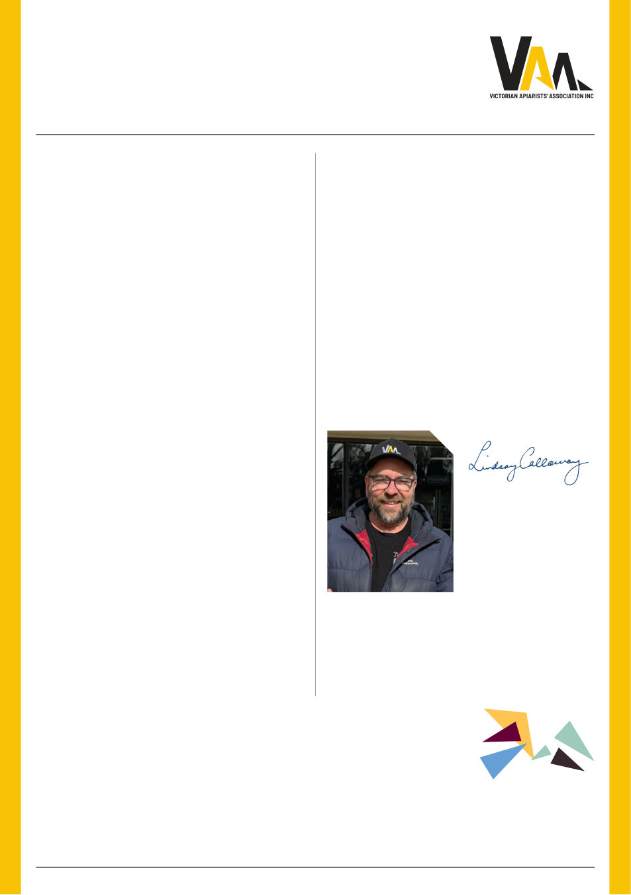

VAA AUSTRALIAN BEE JOURNAL | VOL. 109 No. 09 September 2026 | 9
Our opportunity
Despite all of this, I don’t see our future as doom and gloom.
Quite the opposite. There has probably never been a time when
the contribution of beekeepers has been better understood
outside our own industry.
Pollination-dependent industries are engaging. Governments
are listening. Researchers are working on solutions. And beekeepers
are adapting extraordinarily quickly.
Our job now is to turn that attention into lasting change. And
that brings me back to the journal you are holding.
The Australian Bee Journal has served beekeepers since 1918.
Its next chapter should absolutely continue to put
beekeepers first.
But I also hope it increasingly finds its way onto the desks
of growers, researchers, agricultural leaders, Ministers and
decision-makers.
Because the story of Australian beekeeping is no longer
only a story about honey. It is a story about people, agriculture,
biosecurity, pollination, resilience and food security. The bees —
and the beekeepers who care for them — have moved from the
back fence to the front line of food security.
Let’s make sure the beekeeper comes with them.
Lindsay Callaway
President
Victorian Apiarists’
Association
That fundamentally changes the complexity, labour and cost
of keeping bees alive. It makes integrated pest management,
monitoring, treatment rotation, genetics, nutrition and access
to practical treatment options more important than ever. It also
reinforces why we cannot simply tell beekeepers to “learn to live
with varroa” and consider the job done.
The recent AHBIC national roundtable was an important
exercise. Fifty-five proposed actions across ten themes were
considered and ultimately distilled into 11 priority actions for
senior government decision-makers.
That work also highlighted how differently Australian
jurisdictions are responding.
Victoria has committed a further $3.2 million through the
Victorian Varroa Transition Program, including Bee Biosecurity
Officers and horticultural support.4 I acknowledge that investment
and the people delivering that work. The VAA is actively working
alongside Agriculture Victoria on several important initiatives. But
I also believe Victoria can do more.
Other jurisdictions have taken different approaches to
treatment support, business resilience, research and regional
programs. At a time when the economic value being protected runs
into billions of dollars, the question should not simply be whether
government has already spent money. The better question is
whether our response is proportionate to the risk ahead.
From my perspective, it isn’t yet. Recognition is welcome.
But recognition is not the same as action.
There is another part of pollination security we don’t talk
about enough: People.
We cannot wait until there is a pollination shortage and
then decide we need more commercial beekeepers. You cannot
rebuild decades of knowledge, breeding stock, equipment, trucks,
relationships, sites and operational capability overnight. Our
industry has an ageing workforce and increasingly high barriers to
entry. At exactly the time we need skilled professional beekeepers
more than ever, varroa is making the job more technical, more
labour-intensive and more expensive.
That should concern everyone who depends upon managed
pollination. Our objective should not simply be helping beekeepers
survive varroa. It should be ensuring Victoria retains sufficient
healthy, commercially viable and professionally managed honey
bee colonies — and the beekeepers required to manage them —
to secure our future.
References
1. Victorian Apiarists’ Association. “Request for 3-year Grant Support for Victorian Beekeepers Managing Varroa Mite,” 2026 June 3rd
2. Victorian Apiarists’ Association. “The State of Beekeeping and Pollination Security in Victoria and Australia – Briefing Paper to the Minister for Agriculture,” 2026 July.
3. Australian Government Department of Agriculture, Fisheries and Forestry. “Honey bees, crop pollination and varroa mite — frequently asked questions.” DAFF.
4. Agriculture Victoria. “Varroa mite – current situation.” Agriculture Victoria (Dept. of Energy, Environment and Climate Action).
5. Australian Honey Bee Industry Council. “Media Release: National Emergency Honey Bee Industry Roundtable.” AHBIC.
“We are not asking government to protect the value of the honey
crop. We are asking government to recognise and help protect the
beekeepers and the pollination capacity behind billions of dollars
of Victorian agriculture.”
“Pollination-dependent industries are
engaging. Governments are listening.
Researchers are working on solutions.
And beekeepers are adapting
extraordinarily quickly.”
Recognition needs to become action
Protect the people as well as the bees